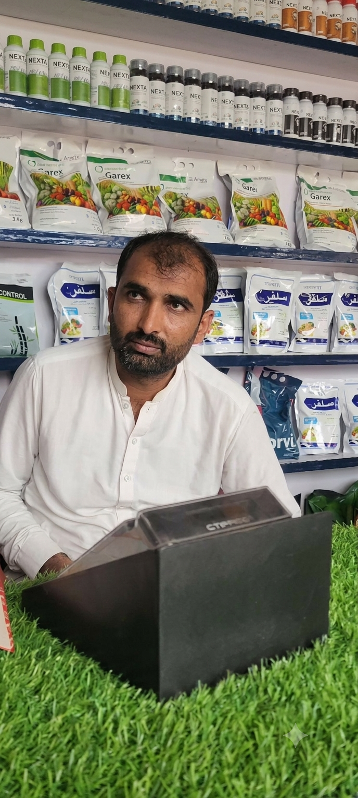
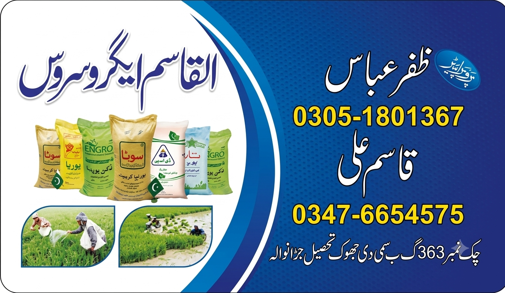

ظفر چوہدری زراعت
گندم، مکئی، کپاس اور کماد کا بااعتماد مرکز

گندم، مکئی، کپاس اور کماد کا بااعتماد مرکز


۱۰۰٪ اوریجنل ملٹی نیشنل زرعی ادویات
ظفر چوہدری سے فصل کا بہترین علاج جانیں
گوجرہ کا لائیو موسم اور بارش کی رپورٹ نیچے بٹن پر دیکھیں۔
AccuWeather گوجرہ لائیو موسم کی اوریجنل رپورٹ دیکھیںچک 363 گ ب جھوک سمیٹلی (نزد پی ایس او پٹرول پمپ، گوجرہ) — دکان پر تشریف لانے کے لیے نقشہ کھولیں۔
گوگل میپس پر دکان کا راستہ دیکھیں (Live Map)اپنے موبائل کیمرے سے لائیو فصل اسکین کریں — بیماری اور اس کا علاج دیکھیں۔
ڈائریکٹ لائیو اسکینر کیمرہ کھولیںسنڈی، سست تیلا اور سفید مکھی کا مکمل خاتمہ۔
گندم، مکئی اور کپاس کی تمام جڑی بوٹیوں کی تلفی۔
پودوں کی تیز رفتار بڑھوتری اور رنگت کے لیے۔

چیف ایگزیکٹو و ایپس آرکیٹیکٹ
اپنے بزنس کا شاندار اینڈرائیڈ ایپ بنوانے کے لیے رابطہ کریں:
طاہر نذیر کی پروفائل و رابطہ پیج